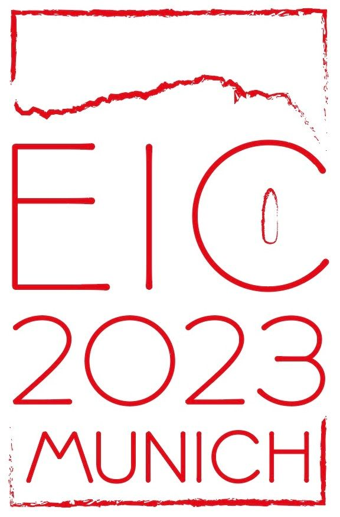
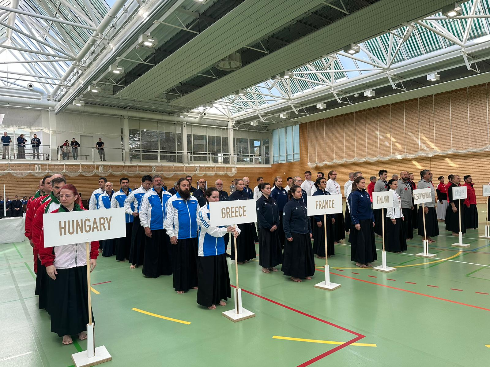
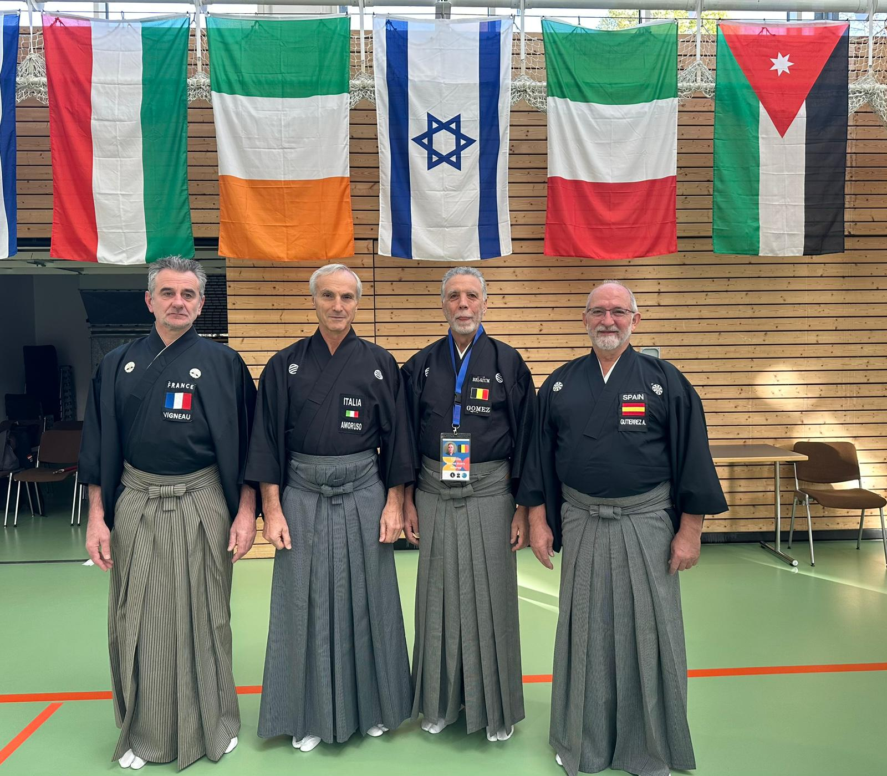
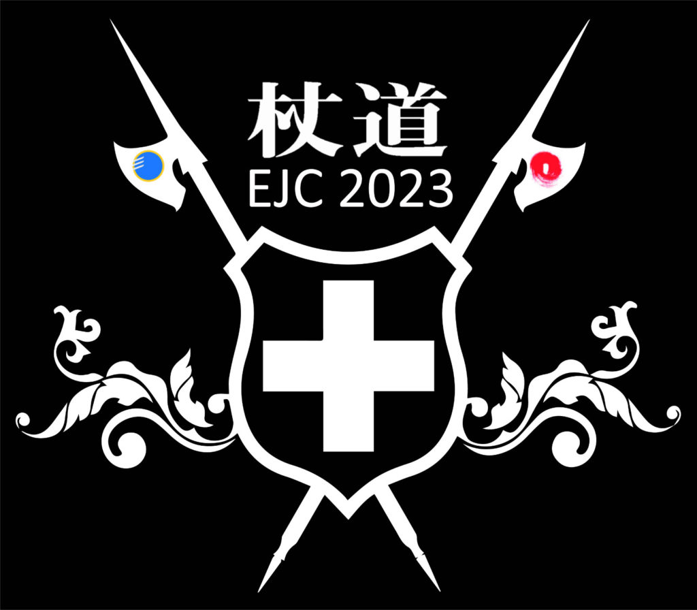
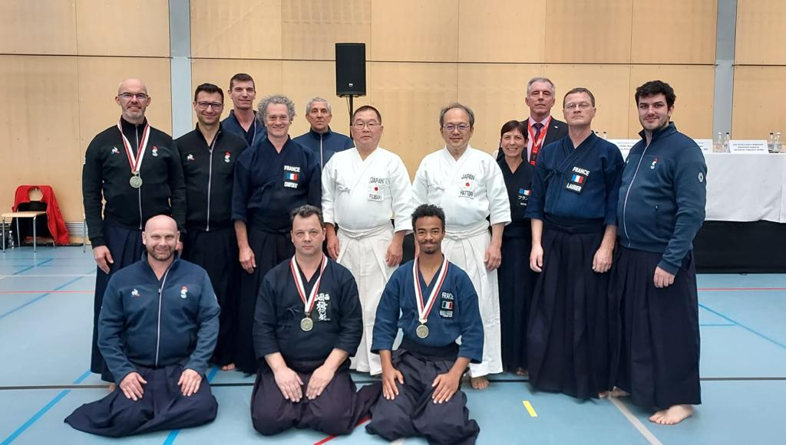
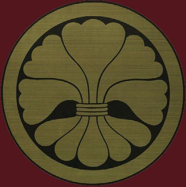
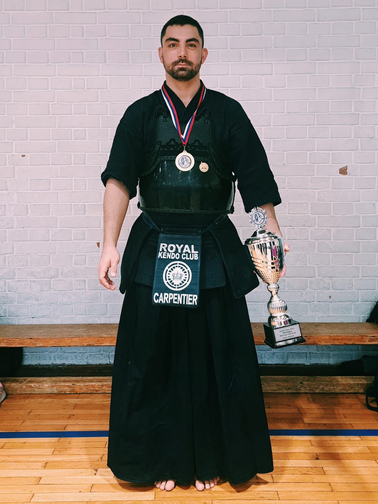
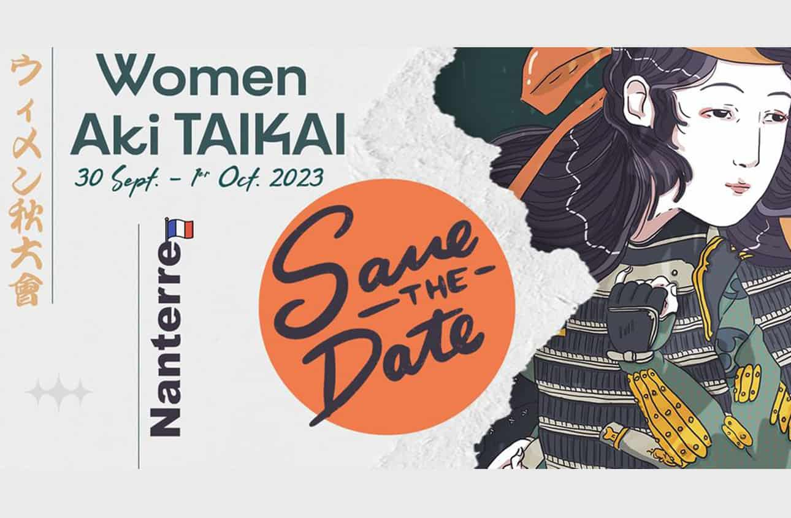
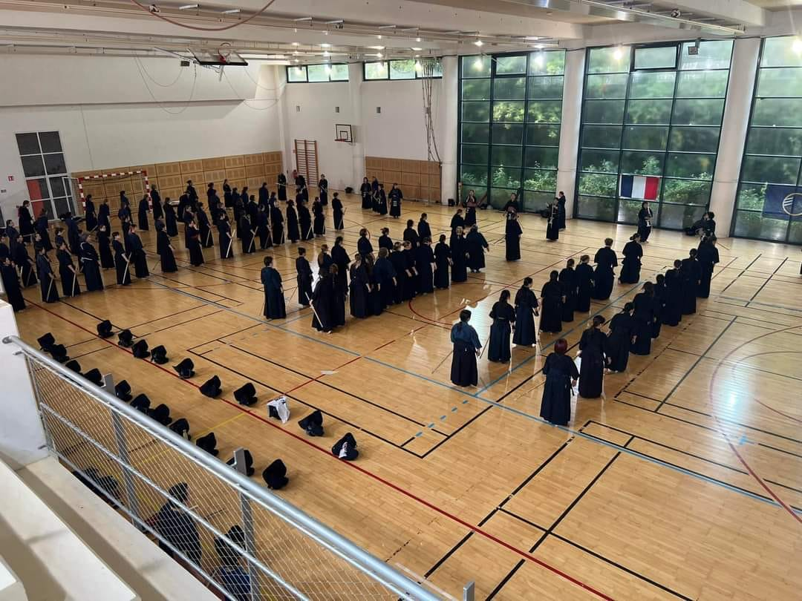
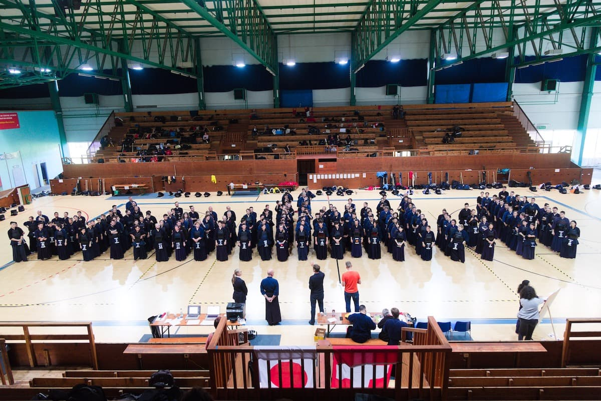

Ce mois d’octobre 2023 ALLARD Alice, sous le bienveillant encadrement de DE BACKER Stéphanie, a participé à son premier stage jeunes où elle a dignement représenté le club Lillois.
Merci à Marc RAGONA pour sa vidéo souvenirs.
Ce mois d’octobre 2023 ALLARD Alice, sous le bienveillant encadrement de DE BACKER Stéphanie, a participé à son premier stage jeunes où elle a dignement représenté le club Lillois.
Merci à Marc RAGONA pour sa vidéo souvenirs.

Le 30ème Championnat d’Europe de Iaïdo a eu lieu du 27 au 29 octobre 2023 à Munich en ALLEMAGNE.
L’équipe de France a fait honneur à la discipline et a su montrer une pratique de qualité et d’engagement.

Nous remercions les membres du Club, GOMEZ Emilio et VIGNEAU Patrick, qui ont arbitré les compétiteurs durant ce week-end outre Rhin.

STAGE de KENDO les 28-29-30 octobre 2023 à Strasbourg
Encadré par
Pour un renseignement ou vous inscrire écrire à ---------

Les championnats d’Europe de Jodo se sont déroulés dans la commune de Magglingen en Suisse, les français n’ont pas démérité et ont fièrement représenté nos couleurs, bravo à eux.
Notre club était présent en la personne de BAYART Olivier qui a obtenu le fighting spirit de la catégorie 6e dan.

Le week-end du 22 et 23 octobre s’est déroulée la Toru Giga Cup (Compétition de Kendo) à Prague.
Un grand merci à DE BACKER Stéphanie et MOUTARDE Kiyoko pour avoir représenté le club Lillois pendant ce week-end.
DE BACKER Stéphanie remporte le figthing spirit dans la compétition individuelle féminine, MOUTARDE Kioyoko elle, remporte la première place dans la compétition féminine individuelle.
Un grand remerciement à elles pour leur engagement.


Bonjour à toutes et tous,ce mois d’octobre a été exceptionnel en son 7e jour. Nous nous sommes réjouis ensemble pour de multiples raisons, en effet, notre club, le Club Lillois de Judo, a été créé il y a plus de 70 ans et sa section kendo il y a 50 ans. Ces anniversaires se devaient être célébrés car ils représentent les réussites et la pérennité de notre association. Cette existence ne serait rien sans l’engagement au service des arts martiaux de personnes exceptionnelles telles que notre Président d’Honneur, dont nous avons fêté le jubilé, ses cinquante années de pratique dans le kendo, Roger Pischler dont nous avons également célébré le quatre-vingtième anniversaire. Il s’est agi également de saluer et de fêter l’exceptionnel travail de Jean-Pierre Cortier, qui durant cette année, a obtenu son 8e dan de kinomochi, bravo à lui pour cette consécration obtenue après une vie d’astreinte et d’engagement au service des arts martiaux. Ils sont pour nous tous, des modèles, des inspirations, ils nous encouragent à travailler la voie avec abnégation, modestie et patience. Tous, nous les remercions pour cela.
Bien à vous toutes et tous
 Ce 15 octobre se déroulait l’Open de Serbie qui a vu la victoire de Jean CARPENTIER face à M.VUCINIC dans la finale senior homme.
Ce 15 octobre se déroulait l’Open de Serbie qui a vu la victoire de Jean CARPENTIER face à M.VUCINIC dans la finale senior homme.



Bonjour, la première édition du Aki Taikai s’est déroulée du 30 septembre au 1er octobre.
Il consiste en un stage de kendo réservé exclusivement aux femmes, et a réuni près de 150 participants à Nanterre durant le week-end.
Bonjour, ce samedi et dimanche 23 et 24 septembre se déroulait la compétition de kendo « Kasahara Cup » à Genève.
